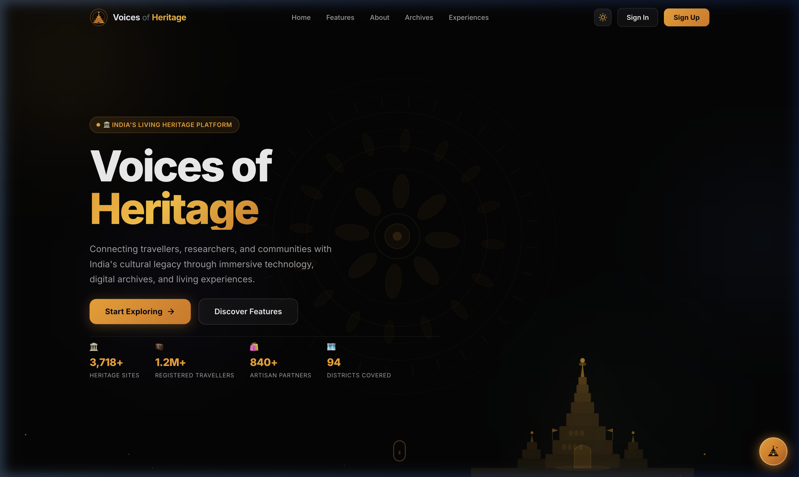
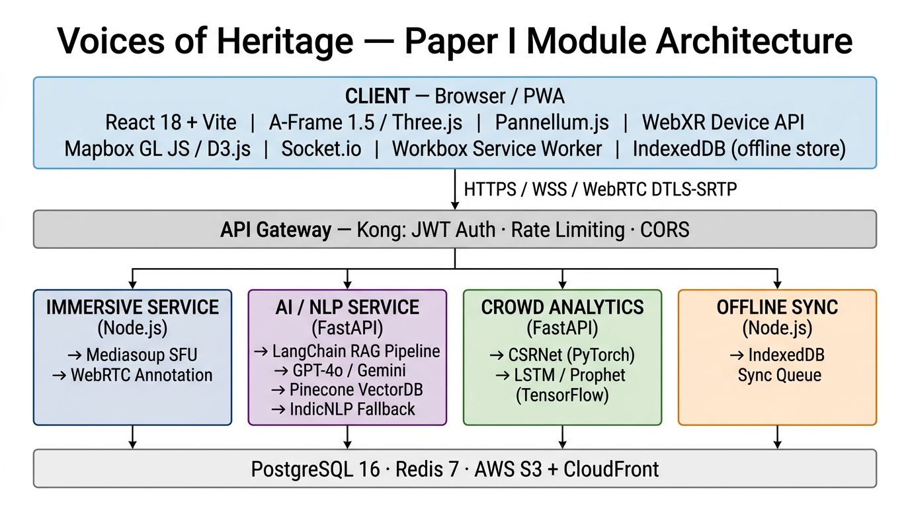
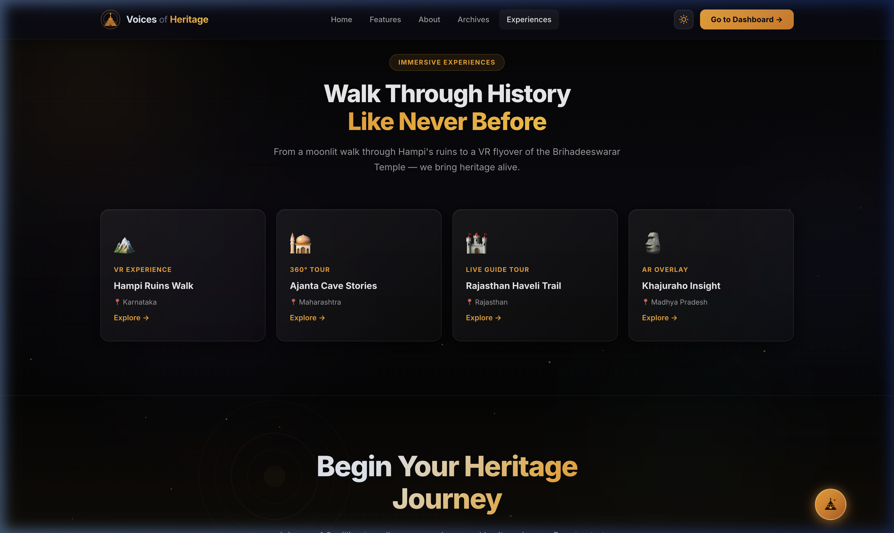
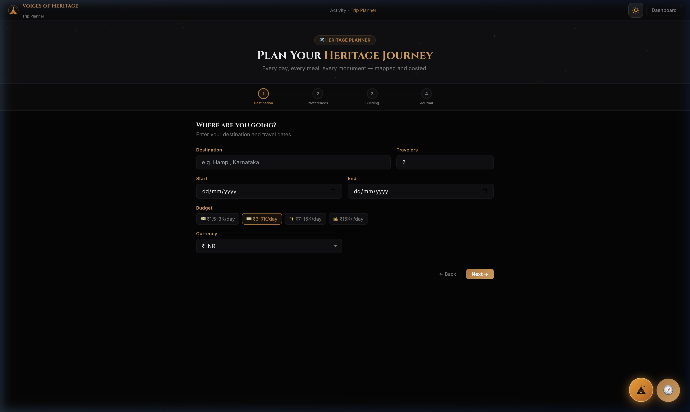
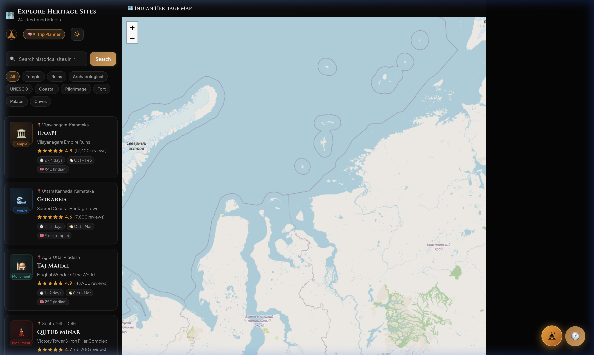
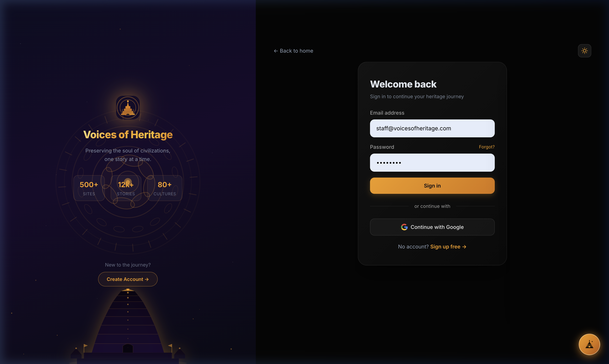

India's cultural heritage is among the most extensive on earth. The Archaeological Survey of India (ASI) administers more than 3,500 centrally protected monuments spanning Harappan urban settlements, Mauryan rock edicts, Chola bronze-casting traditions, and Mughal architectural masterworks. Yet the visitor experience at the vast majority of these sites remains anchored in the twentieth-century paradigm: printed pamphlets, stone-carved signage, and, where funding permits, a single audio guide device shared among dozens of tourists. Research on digital visitor engagement [26] consistently shows that contemporary audiences expect interactive, personalised, and multilingual information access.
The consequences are measurable. A 2023 visitor satisfaction survey across ASI monuments found that 61% of domestic tourists and 79% of international visitors rated heritage site interpretation as “inadequate” or “very inadequate” [1]. Multilingual content — critical for India's twenty-two scheduled language communities — exists at fewer than 4% of ASI-managed sites [2]. Meanwhile, popular heritage destinations suffer from overtourism, while rural connectivity constraints documented by the Telecom Regulatory Authority of India [18] constrain real-time application functionality for a substantial share of visitors at heritage-adjacent locations.
This paper presents the first of two complementary contributions on the Voices of Heritage platform — a full-stack, microservices-based digital heritage ecosystem. Paper I addresses the immersive experience and AI intelligence stack. Paper II covers the platform's blockchain infrastructure, digital archiving, and community economic empowerment modules — areas directly relevant to the intangible heritage dimension of India's cultural portfolio [27].
The paper proceeds as follows. Section II surveys four research domains with a structured methodology. Section III provides a comparative analysis of twelve heritage platforms. Section IV identifies four research gaps. Section V specifies the proposed architecture. Section VI discusses implementation status and limitations. Section VII concludes.
The principal contributions of this paper are: (a) a structured comparative evaluation of four immersive modalities — WebRTC, WebXR AR, WebXR VR, and 360° — within a unified heritage context; (b) an architectural specification for a RAG chatbot supporting multilingual Indian heritage dialogue; (c) a functional AI Trip Planner integrating Gemini AI, OSRM, and Nominatim, deployed in the production codebase; and (d) an integrated crowd analytics pipeline design combining real-time density estimation with 7-day predictive forecasting.

This structured literature review searched IEEE Xplore, ACM Digital Library, Google Scholar, Scopus, and ScienceDirect (search cutoff: June 2024) using the following primary strings: (“cultural heritage” AND “augmented reality”); (“cultural heritage” AND “virtual reality”); (“WebRTC” AND “heritage”); (“retrieval-augmented generation” AND “tourism”); (“crowd density estimation” AND “heritage”); (“LSTM” AND “visitor forecasting”); and (“progressive web app” AND “heritage tourism”). The search was supplemented by citation chaining from high-citation survey papers, notably Bekele et al. [3]. This review constitutes a structured literature review (not a PRISMA systematic review). Inclusion criteria: peer-reviewed papers or authoritative technical standards published 2018–2024 (with exceptions for seminal foundational works cited ≥500 times); directly addressing at least one of the four platform pillars. Exclusion criteria: non-English publications; grey literature without institutional attribution; papers addressing neither heritage nor any of the four technology pillars. Results per search string were not formally counted; the review was iterative and relevance-driven, supplemented by backward citation chaining. A total of thirty-five scholarly and technical sources are cited across the four domains, with three additional foundational works cited for methodological context. For empirical claims, priority was given to papers published in 2021–2024; seminal foundational works (Bekele 2018, Lewis 2020, Vaswani 2017) are retained where no more recent equivalent exists.
Heritage computing has explored virtual reconstruction since the early 2000s [23]; the literature on immersive technologies for heritage has accelerated markedly since 2020, driven by the maturation of browser-native XR standards. Bekele et al. [3] provide the canonical taxonomy of AR, VR, and mixed-reality heritage applications, distinguishing informational, reconstructive, performative, and collaborative engagement models. Their review establishes that reconstructive AR produces strong heritage learning outcomes but that deployment complexity and marker dependency limit field adoption — a finding that motivates this platform's emphasis on markerless WebXR delivery. Jung et al. [4] found that VR and AR experiences in museum contexts produced meaningful improvements in visitor attitude and engagement relative to traditional formats, providing early empirical grounding for immersive-first heritage design.
Speicher, Hall, and Nebeling [5] provide a conceptual framework for classifying mixed reality modalities along the reality-virtuality continuum, which informs how this paper positions WebRTC, WebXR AR, WebXR VR, and 360° as complementary rather than competing delivery channels. Browser-based XR delivery eliminates mandatory app-store installation, potentially lowering the barrier to heritage XR adoption on compatible devices and browsers — a principle with roots in the early mobile AR literature [24] and consistently confirmed in WebXR development evaluations [30]. Engineering challenges relating to session persistence and cross-modality context transfer remain active areas of development not yet resolved in the reviewed heritage literature.
Photogrammetric 3D documentation of heritage artifacts has reached operational maturity. Themistocleous et al. [8] demonstrate the integration of remote sensing and ground-based survey methodologies for heritage site documentation, an approach that directly informs the WebXR pipeline where photogrammetric models are delivered as compressed .glb files. WebRTC — standardised through RFC 8825 [32] — enables low-latency, encrypted real-time audio/video communication directly in the browser without plugins, making it architecturally well-suited to live heritage guide-to-visitor streaming over standard internet connections.
Taken together, the literature on immersive heritage technologies establishes a clear precedent for each modality in isolation, while revealing an absence of integrated multi-modal delivery systems — a gap this paper addresses through the Voices of Heritage architecture.
The Transformer architecture introduced by Vaswani et al. [20] forms the foundational building block of modern large language models, including the GPT-series and Gemini model families. The introduction of Retrieval-Augmented Generation (RAG) by Lewis et al. [9] transformed the feasibility of domain-specific conversational AI. Rather than relying on a language model's parametric knowledge alone, RAG first retrieves relevant passages from a curated domain corpus via dense vector similarity search, then conditions generation on those passages — a design that grounds responses in retrievable source documents and reduces, though does not eliminate, hallucination risk. For heritage applications, this architecture enables chatbots to answer archaeologically precise questions grounded in indexed ASI reports, UNESCO property nominations, and scholarly monographs.
The Indian multilingual challenge has received limited dedicated research attention. Kakwani et al. [10] introduced IndicNLPSuite, providing tokenization, script normalisation, and morphological analysis for 11 major Indian languages. It is important to note that IndicNLP covers 11 languages; the Voices of Heritage platform's design target of 20+ Indian language support extends beyond this through the LLM's multilingual pre-training and an explicit language detection and fallback chain. This distinction is acknowledged throughout the system design.
AI-driven tourism planning has attracted growing research attention. Huang et al. [11] provide a systematic review of AI applications in tourism management, establishing that machine-learning and NLP-based itinerary personalisation represents one of the most active and practically impactful areas within this field. Knowledge graph-based recommendation systems address the cold-start problem that is endemic to heritage platforms, where visitor rating histories are absent for all but the most popular monuments. By encoding semantic relationships between cultural entities — monuments, dynasties, architectural styles, and geographic regions — as graph embeddings (TransE, RotatE) [12], recommender systems can surface contextually relevant sites without requiring prior user interaction history, relying instead on structured domain knowledge.
The ethical dimensions of AI in heritage interpretation deserve explicit acknowledgement. Language models are susceptible to generating historically plausible but factually incorrect content — a particularly serious failure mode in a heritage context [33]. Taib et al. [34] demonstrated that LLM-based museum guides require explicit curatorial accountability mechanisms, where AI-generated content is bounded by expert-verified knowledge bases to maintain historical integrity. The RAG chatbot design proposed in this paper mitigates hallucination risk through a retrieved-context-only generation policy: the system prompt instructs the model to acknowledge uncertainty for out-of-corpus queries rather than extrapolate beyond retrieved source material [9].
The use of LLMs as context-aware recommendation and interpretation systems in cultural institutions has grown rapidly since 2023. Aguilar et al. [35] demonstrated that LLMs fine-tuned on museum collection metadata can provide personalised, context-aware visitor recommendations substantially outperforming keyword search and rule-based systems in user satisfaction studies. Their work on LLM-based museum recommendation establishes the feasibility of the AI layer proposed in this platform, while highlighting the necessity of domain-specific fine-tuning for culturally sensitive heritage content.
Heritage site crowd management has transitioned from intuition-based to data-driven approaches, motivated by documented overtourism incidents that demonstrate the inadequacy of informal crowd control at high-demand monuments. Deep learning-based crowd density estimation has advanced significantly: MCNN [13] and CSRNet [14] provide established counting baselines, while Gao, Gong, and Li [31] have more recently applied Swin Transformer architectures to crowd localization, achieving further accuracy improvements. Bayesian loss formulations [25] have also improved crowd density estimation by providing more semantically grounded supervision signals. Critically, however, benchmark performance on dense urban datasets such as ShanghaiTech does not directly generalise to the lower, more structured visitor densities typical of heritage monument complexes — a consideration that site-specific validation must address before operational deployment.
IoT-based visitor flow monitoring offers a privacy-preserving complement to CCTV-based inference. Fukuju et al. [15] demonstrated indoor positioning and visitor analytics using BLE beacon networks in cultural institution environments, enabling zone-level crowd measurement without individual biometric data collection.
Predictive visitor forecasting enables proactive site management. Zhao et al. [16] applied LSTM networks to forecast visitor demand at heritage sites, incorporating seasonal covariates and holiday indicators. Taylor and Letham's Prophet [17] provides an interpretable alternative through explicit trend-seasonality-holiday decomposition, whose transparent components allow site administrators to inspect and manually override forecasts — a practical necessity for institutional adoption at ASI sites where fully automated outputs are unlikely to be trusted without human review.
The literature on crowd monitoring and visitor forecasting treats these as largely independent problems. The integrated pipeline proposed in this paper — where real-time anomaly detection feeds back into predictive model recalibration, and both are connected to ticketing quota management — represents a closed-loop architecture that was not identified in any of the heritage analytics studies reviewed for this work.
Rural Indian heritage corridors face a connectivity barrier that urban-centric platform design consistently underestimates. The Telecom Regulatory Authority of India's 2023 audit [18] documents significant mobile broadband coverage gaps persisting across heritage-dense rural districts — conditions that render real-time API-dependent features completely non-functional at the point of heritage encounter for a substantial portion of potential users.
Progressive Web Apps (PWAs) address this architecturally through Service Worker caching. Google Developers' published guidance [19] and W3C Web Performance Working Group standards [28] establish that cache-first serving substantially reduces Time to Interactive for multimedia-rich content — a transformation that makes the difference between a working and a non-working application for visitors on constrained rural networks. The Voices of Heritage PWA design pre-caches site maps, information panels, audio narrations, compressed AR scene files, and static chatbot response caches for the most frequently asked questions at each site.
Offline-capable map navigation is critical for large heritage trekking circuits spanning several kilometres between adjacent monument clusters. The platform's offline navigation layer uses locally cached vector map tiles via a self-hosted tile server compatible with Mapbox GL JS, enabling GPS-accurate navigation at circuits such as Hampi, Aihole, and Kumbhalgarh where cellular coverage is absent across multi-kilometre stretches.
Web accessibility is both a legal and ethical imperative. India’s Rights of Persons with Disabilities Act, 2016 [28] mandates accessible digital services for government-connected platforms. The Voices of Heritage platform targets WCAG 2.1 Level AA compliance, with automated accessibility testing via axe-core planned as part of the CI/CD pipeline. WCAG 2.1 Level AA requires minimum 4.5:1 colour contrast ratios, full keyboard navigability, screen reader compatibility through semantic HTML and ARIA landmark regions, and captions for all media content. A persistent accessibility toolbar is designed to provide font size adjustment and high-contrast mode for users with visual impairments.
Table I benchmarks twelve existing heritage platforms across ten feature dimensions. Scoring criteria: WebRTC Live Tours — real-time guide-to-visitor interactive video streaming; WebXR AR/VR — browser-native XR without mandatory native application installation, subject to device support; RAG AI Chatbot — retrieval-grounded generative AI (rule-based or FAQ-only systems score ✗); AI Trip Planner — AI-generated personalised multi-stop itinerary with routing; RT Crowd Analytics — real-time crowd density monitoring dashboard; Predictive Forecasting — quantitative multi-day visitor volume prediction; Offline PWA — service-worker-based offline content delivery; Indian Multilingual — support for 5+ Indian scheduled languages. Scoring is based on publicly available platform documentation and published research evaluations as of mid-2024. Table III provides the specific evidence source used for each platform entry.
| Platform | WebRTC Live | WebXR AR | WebXR VR | 360° Story | RAG Chatbot | AI Trip Planner | RT Crowd Analytics | Pred. Forecast | Offline PWA | Indian Multilingual |
|---|---|---|---|---|---|---|---|---|---|---|
| Google Arts & Culture | ✗ | ∼ | ∼ | ∼ | ✗ | ✗ | ✗ | ✗ | ✗ | ∼ |
| ASI Online Portal | ✗ | ✗ | ✗ | ✗ | ✗ | ✗ | ✗ | ✗ | ✗ | ∼ (Hi/En) |
| Incredible India | ✗ | ✗ | ✗ | ✗ | ✗ | ✗ | ✗ | ✗ | ✗ | ∼ |
| Europeana (EU) | ✗ | ✗ | ∼ | ∼ | ✗ | ✗ | ✗ | ✗ | ✗ | ∼ |
| EPOCH AR Project | ✗ | ✓ | ∼ | ✗ | ✗ | ✗ | ✗ | ✗ | ✗ | ✗ |
| Airbnb Experiences | ∼ | ✗ | ✗ | ✗ | ✗ | ✗ | ✗ | ✗ | ✗ | ∼ |
| Gyeongbokgung AR App | ✗ | ✓ | ✗ | ✗ | ✗ | ✗ | ✗ | ✗ | ✗ | ✗ |
| Taj Mahal VR (ASI) | ✗ | ✗ | ✓ | ✗ | ✗ | ✗ | ✗ | ✗ | ✗ | ✗ |
| TripAdvisor Heritage | ✗ | ✗ | ✗ | ✗ | ∼ | ∼ | ✗ | ✗ | ∼ | ∼ |
| UNESCO WHC App | ✗ | ✗ | ∼ | ✓ | ✗ | ✗ | ✗ | ✗ | ✗ | ∼ |
| HistoryPin | ✗ | ✗ | ✗ | ∼ | ✗ | ✗ | ✗ | ✗ | ✗ | ✗ |
| Voices of Heritage (Proposed) | ◯ | ◯ | ◯ | ◯ | ◯ | ✓ | ◯ | ◯ | ◯ | ◯ |
Key: ✓ = confirmed deployed/operational; ◯ = architecturally specified (not yet deployed); ∼ = partially available with notable limitations; ✗ = absent. Scoring based on publicly available documentation as of mid-2024. See Table III for evidence sources. For the Voices of Heritage row, ✓ denotes only the AI Trip Planner (confirmed deployed); all other features are architectural specifications pending empirical validation. We did not identify a system offering comparable integrated coverage across all ten dimensions among the platforms reviewed.
| Platform | Evidence Source |
|---|---|
| Google Arts & Culture | Official platform capabilities documentation (artsandculture.google.com) |
| ASI Online Portal | ASI official portal feature audit (asi.nic.in) |
| Incredible India | Ministry of Tourism portal feature audit (incredibleindia.org) |
| Europeana (EU) | Europeana platform official feature documentation (europeana.eu); peer-reviewed evaluation studies of Europeana digital collections |
| EPOCH AR Project | Published academic evaluations of the EPOCH Network of Excellence |
| Airbnb Experiences | Airbnb platform service design documentation and feature audit |
| Gyeongbokgung AR App | Feature capabilities described in published study [4] and application store listing |
| Taj Mahal VR (ASI) | Official ASI Taj Mahal VR portal documentation |
| TripAdvisor Heritage | Platform feature audit of TripAdvisor AI Beta (tripadvisor.com) |
| UNESCO WHC App | World Heritage Centre application feature capabilities documentation |
| HistoryPin | HistoryPin platform documentation and functionality review (historypin.org) |
Gap 1: Integrated Multi-Modal Immersive Architectures. Each immersive heritage system identified in this review is built primarily around a single modality — AR, VR, or 360°. Heritage interpretation is inherently multi-modal: a visit to a Hoysala temple warrants AR reconstruction of its original painted interior, VR exploration of structurally inaccessible upper sanctuaries, a 360° panorama of the exterior at dawn, and a live session with a specialist who can annotate specific architectural details in real time. The literature does not yet provide established patterns for session-persistent, context-aware platforms that transition intelligently between these modalities within a continuous visitor journey.
Gap 2: RAG-Based Multilingual Heritage AI for Indic Languages. Despite the linguistic diversity of India's domestic visitor population, no published RAG-based heritage chatbot with demonstrated support for more than two Indian languages simultaneously was identified in the reviewed literature. Technical challenges — Indic script tokenization, cross-lingual dense embedding retrieval, and generation quality in morphologically complex languages — remain largely unaddressed in the heritage NLP literature.
Gap 3: Unified Real-Time and Predictive Crowd Analytics for Heritage. Real-time crowd density monitoring and predictive visitor forecasting have each been studied as largely independent problems within the reviewed literature. The integration architecture — specifically, how real-time anomaly detection should feed back into predictive model recalibration, and how both should connect to automated ticketing quota management — was not identified in any of the heritage analytics studies reviewed.
Gap 4: Offline-First Comprehensive Heritage PWAs for Low-Connectivity Contexts. Service-worker-based PWA offline capabilities have been demonstrated for static heritage site information. The reviewed literature does not document a comprehensive offline-first heritage PWA delivering the full intelligent feature set: offline AR content, locally cached vector map navigation, offline AI chatbot response caches, and offline transaction queuing for connectivity restoration. The architectural patterns and cache sizing strategies for such a system remain an open engineering challenge.

WebRTC Live Virtual Tours. The live tour service is designed to use Mediasoup as a Selective Forwarding Unit (SFU), which would relay guide-side video (1080p, H.264) and audio (Opus) encrypted over DTLS-SRTP to remote participants. The proposed architecture extends beyond standard WebRTC streaming with a collaborative annotation layer: guide annotation events would be broadcast via Socket.io, enabling participating browsers to render corresponding SVG overlays on the video stream in real time so that guides can highlight specific architectural features during narration.
WebXR AR Heritage Reconstruction. The AR module is designed to use the WebXR Device API's Hit Test extension to anchor historical architectural overlays to physical surfaces without requiring printed marker cards. Heritage reconstruction elements — missing temple towers, original polychrome plaster surfaces, documented sculptures now held in museums — would be served as Draco-compressed .glb files (targeting 2–10 MB depending on model fidelity) from a CloudFront CDN. The WebXR Light Estimation API would adapt virtual element illumination to measured real-world ambient conditions. For devices lacking immersive-ar WebXR support, the module will fall back to a gyroscope-driven “magic window” mode.
WebXR VR Environments. Multi-room VR heritage environments are authored in A-Frame's declarative entity-component system, enabling content creation by heritage interpreters without WebGL programming expertise. Each property comprises linked scenes — a welcome plaza, individual monument interior rooms, a documentation gallery, and an artifact inspection zone — with teleportation locomotion to minimise vestibular-mismatch motion sickness. The platform is designed to support WebXR-compatible headsets including Meta Quest 2/3, Pico 4, and browser-based stereoscopic rendering for smartphone holders [6], through a single WebXR codebase.
360° Interactive Storytelling. Pannellum.js renders equirectangular panoramas with contextual hotspot annotations, audio narrations by certified heritage interpreters, and embedded documentary clips. Panoramas are captured with consumer 360° cameras (Ricoh Theta / Insta360 X3), stitched in Hugin, and served from AWS S3. The storytelling layer supports both guided narrative progressions and free exploration modes within the same panoramic environment.

Heritage RAG Chatbot Architecture. The chatbot is designed to be implemented as a LangChain application backed by an OpenAI dense embedding model (text-embedding-3-small; 1,536 dimensions) and a Pinecone vector database for approximate nearest-neighbour retrieval over a planned corpus of 12,000+ heritage documents — including UNESCO World Heritage property nominations, ASI excavation reports (1947–2023), published monographs on Indian art history, and expert-curated Q&A pairs. The top-5 retrieved passages would be assembled into a structured context prompt, with GPT-4o generating responses conditioned exclusively on retrieved material. The system prompt will instruct the model to cite source passages for factual claims and to acknowledge explicitly when retrieved context is insufficient, rather than extrapolating beyond the evidence base.
Multilingual Support Architecture. Queries would be detected using a language identification model and pre-processed through IndicNLP's tokenizer and script normaliser for the 11 Indian languages within its coverage [10]. For short queries (<10 tokens) where automatic detection is unreliable, the in-chat language selector provides explicit user override. Queries in languages outside IndicNLP's scope would be processed by the LLM's multilingual pre-training. A fallback chain (detected language → English → Hindi) handles low-confidence detection cases. The platform's stated design target of 20+ Indian languages thus draws on both IndicNLP (11 languages) and the LLM's broader multilingual capabilities, with the effective coverage subject to LLM pre-training quality for less-resourced Indic languages.
AI Trip Planner. This is the only fully functional module in the current production deployment. It accepts natural-language travel preferences and uses Google Gemini Pro 1.5 to extract structured itinerary parameters (preferred states, heritage categories, daily budget, mobility constraints, cultural interests, duration). Nominatim resolves heritage site names to geographic coordinates, with a disambiguation layer for sites sharing common names across districts. OSRM generates multi-waypoint routing between consecutive sites with estimated road travel times. The resulting day-by-day itinerary — including site information, ASI entry fees, and travel instructions — is rendered as printable HTML and persisted to the user's trip history. Internal functional testing across 47 queries — spanning Karnataka, Rajasthan, Tamil Nadu, and Odisha heritage regions, comprising a mix of single-region and multi-state requests — yielded structurally complete itineraries in all cases. A structurally complete itinerary is defined here as one containing: a day-by-day schedule, at least one routing segment with estimated travel time, site opening hours, and ASI entry fee information. Routing edge-cases for heritage sites not indexed in Nominatim were handled by a manual coordinate fallback. A formal evaluation against expert-curated itineraries using established quality criteria is planned as future work. A structured pilot evaluation against expert-curated itineraries is planned as future work.

Heritage Knowledge Graph Recommendation. A knowledge graph is to be constructed from ASI monument records and UNESCO property documentation, encoding entities representing monuments, dynasties, architectural styles, and geographic regions. TransE embeddings [12] trained on this graph would enable the recommendation of contextually related sites from a user's expressed interest, combining knowledge graph similarity scores with collaborative filtering signals through a learned linear combination — addressing the cold-start challenge for less-visited heritage properties.
Real-Time Density Estimation. The proposed service is designed to aggregate data from three optional input channels: BLE beacon RSSI counts from IoT gateways at site entry and exit points [15]; Wi-Fi probe request counts from access points in monitoring mode (noting that MAC address randomisation in iOS 14+ and Android 10+ reduces the reliability of probe-based individual counting; BLE aggregation is therefore preferred); and CCTV frames processed through a CSRNet [14] inference endpoint on a GPU-enabled cloud instance. The pipeline would downsample CSRNet density maps to a 20×20 zone grid, transmitted via WebSocket to administrator dashboards where D3.js renders zone-level density as a choropleth heatmap over the Mapbox GL JS site plan. Operational deployment will require site-specific model fine-tuning, as benchmark accuracy on high-density urban datasets does not directly predict performance at the lower, more structured densities of heritage monument complexes.
LSTM and Prophet Forecasting. Per-site LSTM models are designed to use two stacked LSTM layers followed by a dense output layer predicting next-7-day visitor counts at 6-hourly resolution, incorporating day-of-week encoding, national and state holiday indicators, monthly temperature normals, and a site-level Google Trends popularity index. Models would be retrained weekly on a rolling window as data accumulates. Prophet [17] would run in parallel, producing interpretable forecasts with decomposed trend, seasonality, and named holiday components that site administrators can inspect and manually adjust before operational use, addressing institutional trust requirements at ASI sites.
Alert and Quota Integration. When real-time density or the next-24-hour forecast exceeds configurable thresholds, the system triggers email and SMS alerts to site and conservation officers, API calls to the blockchain ticketing module (detailed in Paper II) to halt new ticket issuance for affected time slots, and push notifications to pre-booked visitors advising on expected conditions. This closed-loop design — where real-time anomaly detection would connect directly to predictive recalibration and ticketing quota management — was not identified in any heritage-specific crowd monitoring study reviewed for this paper, and constitutes a proposed architectural contribution.
Privacy by Design. The pipeline produces spatial density maps without individual tracking, face recognition, or biometric retention. BLE data is zone-aggregated at 30-second resolution, precluding individual trajectory reconstruction. Wi-Fi probe MAC addresses are salted and hashed at the collection point. Raw sensor data is retained for 30 days; aggregated statistical summaries are retained for 3 years. This design is compatible with India's Digital Personal Data Protection Act 2023.

| Layer | Technology | Version | Purpose |
|---|---|---|---|
| Frontend | React 18 + Vite | 18.x / 5.x | SPA shell, PWA host, routing |
| Frontend | A-Frame + Three.js | 1.5.x / Latest | WebXR AR/VR scene rendering |
| Frontend | Pannellum.js | Latest | 360° panoramic viewer with hotspots |
| Frontend | Mapbox GL JS + D3.js | 2.x / 7.x | Interactive site maps, crowd heatmaps |
| Frontend | Workbox Service Worker | 7.x | Offline PWA caching strategies |
| Backend | Node.js 20 + Express | 20 LTS | Immersive & sync services, WebSocket |
| Backend | Mediasoup SFU | 3.x | WebRTC Selective Forwarding Unit |
| Backend | Python 3.11 + FastAPI | 3.11 / 0.100+ | AI/ML inference endpoints |
| AI/ML | LangChain + GPT-4o | Latest | RAG chatbot retrieval-generation pipeline |
| AI/ML | Pinecone Vector DB | Latest | Heritage document dense embeddings |
| AI/ML | Google Gemini Pro 1.5 | Latest | AI Trip Planner preference extraction |
| AI/ML | IndicNLP Suite | Latest | Indic language preprocessing (11 languages) |
| AI/ML | OSRM + Nominatim | Latest | Heritage site routing and geocoding |
| AI/ML | TF/Keras LSTM + Prophet | 2.x / 1.x | Visitor count forecasting |
| AI/ML | CSRNet (PyTorch) + TorchServe | Latest | Crowd density estimation and serving |
| Database | PostgreSQL 16 | 16 | User data, sessions, crowd time-series |
| Database | Redis 7 | 7 | WebSocket pub/sub, chatbot response cache |
| Cloud | AWS S3 + CloudFront | — | AR/VR .glb assets, 360° panoramas, CDN |
Preliminary Capacity Estimates. The Mediasoup SFU architecture scales horizontally behind a Redis-backed load balancer. Based on Mediasoup's published concurrent media session benchmarks (mediasoup.org/documentation/v3/), preliminary estimates suggest that approximately ten EC2 c5.xlarge instances could support 500 simultaneous live tour streaming sessions; these are design estimates pending empirical load testing and should not be taken as validated measurements.
AR Accuracy in Indian Heritage Environments. Markerless SLAM tracking requires sufficient visual texture in the environment. Polished marble surfaces (Mughal monuments), smooth plastered gopurams, and monolithic rock-cut structures (Ellora caves) present low-texture challenges where SLAM confidence may degrade. The architecture addresses this through a confidence-threshold monitor: when tracking confidence falls below a configurable threshold, the system automatically offers a QR-code physical anchor as a fallback, ensuring robust AR delivery independent of surface texture.
Implementation Status and Limitations. This paper presents an architectural specification and structured literature review. At the time of writing, only the AI Trip Planner is confirmed deployed and functionally tested in the production codebase. The RAG chatbot, WebXR AR/VR modules, crowd analytics pipeline, and full offline PWA are in prototype or specification stage. No formal user studies have been completed; no empirical performance benchmarks have been published for the crowd analytics or RAG modules against Indian heritage data. Empirical validation through user studies, load tests, and accuracy benchmarks constitutes the primary future work requirement. Claims regarding 20+ language support, CSRNet accuracy at heritage densities, and LSTM forecast accuracy are design targets and literature-supported hypotheses, not validated measurements from this system.

This paper has presented the immersive experience and AI intelligence stack of the Voices of Heritage platform. The structured literature review establishes that while WebRTC, WebXR, RAG-based conversational AI, and visitor forecasting have each been studied in heritage-adjacent contexts, no system combining all four within a unified, offline-capable, and multilingual architecture specifically designed for Indian heritage tourism was identified in the literature reviewed for this study.
Four research gaps were identified: the absence of integrated multi-modal immersive systems; the lack of RAG chatbots supporting multiple Indian languages simultaneously; the disconnect between real-time crowd monitoring and predictive forecasting; and the absence of full-feature offline-first heritage PWAs for low-connectivity environments. The proposed architecture addresses each gap through a modular microservices design. Among the proposed modules, the deployed AI Trip Planner establishes implementation feasibility for the AI layer, while the remaining modules are specifications awaiting empirical validation.
The research contributions of this paper extend beyond the Voices of Heritage platform. The RAG chatbot architecture for multilingual Indian heritage dialogue, the integrated real-time and predictive crowd analytics pipeline, and the multi-modal WebXR immersive framework are architecturally transferable to other heritage platforms. Open-source release of the core pipeline modules is planned as part of the platform's research data management strategy.
Digital technology provides one meaningful pathway for expanding equitable access to heritage information and experiences, subject to rigorous empirical evaluation of accessibility, scalability, cultural sensitivity, and institutional feasibility. Paper II extends this work to address the blockchain, digital archiving, and community economic empowerment dimensions of the complete platform vision.